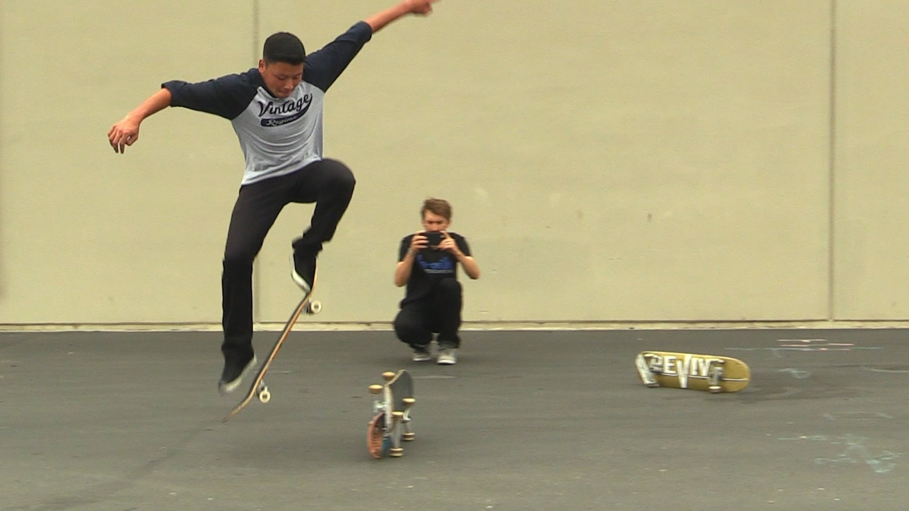
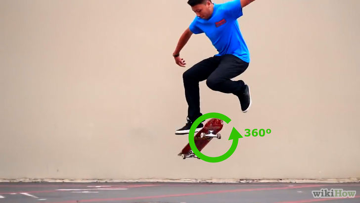

Ollie
Cos'e'?
L'ollie e' uno dei trick base dello skateboarding, di fondamentale importanza per saltare ostacoli.
Proveniente dalla categoria skateboarding trick aereo, esso fu inventato da Alan "Ollie" Gelfand nel 1976 e
successivamente adattato per le superfici piatte da Rodney Mullen.
L'ollie serve come base per molti altri trick, come il kickflip, l'heelflip e il pop-shove it, ed è anche conosciuto come
il no hands aerial (letteralmente aereo senza mani) perché, quando esegue un ollie, lo skateboarder non tocca assolutamente
la tavola con le mani, e alla tavola non viene fissato nessun accessorio.
Esecuzione
Il piede anteriore si porta leggermente più verso il centro della tavola. Lo skater poppa (cioè dà un calcio con il piede
posteriore), portando il piede contemporaneamente verso l'alto. Il pop dà una spinta verso l'alto alla punta anteriore della
tavola, e la coda, colpendo il terreno, rimbalza portando lo skate a mezz'aria. Quando la tavola decolla, la sua estremità
anteriore è molto più in alto della coda rispetto al terreno. Lo skateboarder fa scivolare il piede anteriore in alto e avanti
sul griptape(carta vetrata presente sulla tavola). Il movimento tra la scarpa e la tavola rimette in orizzontale lo skateboard e lo porta ancora un po' più su.
Quando poi lo skater ridiscende, atterra preferibilmente sui truck, e piega le ginocchia per assorbire l'impatto.
Nell'ollie, la cosa che conta di più è il tempismo.
Record
Il più alto ollie ufficialmente registrato dal terreno è di 113 cm, eseguito da Danny Wainwright al Reese Forbes Ollie Challenge da Quiksilver,
anche se su un video dei primi anni novanta si vedeva Jose Marabotto dal Perù saltare una pila di assi la cui altezza è stata
stimata sopra i 127 cm[2]. Il più alto switch ollie ufficialmente registrato è di 101,92 cm, eseguito da Alex Bland in una
competizione simile di switch ollie.

Pop shove-it
Introduzione
Generalmente è un ollie con il quale si fa girare lateralmente la tavola (come per eseguire un ollie 180, ma il corpo resta in posizione
senza ruotare con lo skateboard).Esistono il Frontside ed il Backside Pop Shove-it. Non è facile eseguirlo da fermi con tutti e due
i piedi sopra la tavola, bisogna provarlo in corsa oppure da fermi con un piede per terra.
Esecuzione
Il piede posteriore è "l'artefice" di tutto; una volta eseguito un "ollie" bisogna spingere all'indietro (Backside)
oppure in avanti (Frontside) e fare girare la tavola di 180 gradi su se stessa mentre il piede anteriore rimane in posizione.
Curiosamente, pare che il Pop Shove-it sia stato inventato prima dell'Ollie.

Kickflip
Introduzione
Il kickflip (in origine magic flip, ollie flip, o ollie kickflip), anche noto semplicemente come flip, è uno skateboarding trick
aereo in cui lo skateboarder dà un calcio alla sua tavola per farle fare un giro completo di 360 gradi lungo il suo asse maggiore.
Il kickflip moderno è stato inventato da Rodney Mullen nel 1983.
L'esecuzione del kickflip è simile a quella dell'ollie: è necessario schioccare (esercitare pressione con il piede posteriore)
la coda della tavola e far scorrere il piede principale fino alla parte superiore della piattaforma, portando sia lo skateboard
che l'esecutore in aria. Quando uno skater effettua un kickflip, comincia un ollie standard e poi usa il piede anteriore per far
ruotare la tavola: quindi porta su le gambe lasciando ruotare liberamente lo skateboard, dopodiché abbassa nuovamente i piedi per
bloccare la tavola in posizione corretta per l'atterraggio dopo che essa ha completato la rotazione. Il kickflip è diventato il trick
principale della "nuova scuola" dello skateboarding.
Esecuzione
Anche se il kickflip è simile all'ollie, non è una sua diretta variante. Per eseguire un kickflip standard, è necessario:
-posizionare il piede anteriore in posizione di sicurezza dietro i bulloni e con il tallone leggermente verso il bordo della tavola
-posizionare il tallone del piede posteriore sulla coda della tavola leggermente ad angolo
-poppare il tail con il piede posteriore mentre si salta
-far scivolare il piede anteriore diagonalmente per cominciare la rotazione dello skate, mentre le spalle devono rimanere ben centrate
sulla tavola
-posizionare il piede anteriore sui bulloni superiori e calciare
-alzare entrambi i piedi per toglierli dalla traiettoria dello skateboard e lasciare che finisca la sua rotazione
-riprendere la tavola e finire la corsa. È considerato indice di un buon stile fermare la rotazione dello skate con i piedi mentre
si è ancora in volo, piuttosto che utilizzare il contatto con il terreno per fermare la tavola.
Variazione
Esistono diverse variazioni del kickflip standard. Le più comuni sono:
-Lo heelflip è simile al kickflip, con la differenza che la tavola ruota in direzione opposta. I due trick sembrano simili ad un occhio
poco allenato, ma la tecnica per eseguire un heelflip è molto diversa.
-Il doppio kickflip, quando la tavola fa due giri prima di venir ripresa.
-Il triplo kickflip, quando la tavola fa tre giri prima di venir ripresa.
-Il quadflip, quando la tavola fa quattro giri prima di venir ripresa.
-Il varial kickflip, quando la tavola gira una volta e fa uno spin all'indietro di 180 gradi durante un kickflip.
-L'hardflip, quando la tavola fa uno spin in avanti di 180 gradi durante un kickflip
-Il 360 kickflip (conosciuto anche come 360 flip), quando la tavola fa uno spin di 360 gradi mentre gira.
-Il bigspin half cab kickflip in avanti o all'indietro, quando lo skater fa girare sia la tavola che il suo corpo di 180 gradi
e atterra all'indietro.
-Il kickflip Indy, variante dell'Indy Air in cui l'esecutore fa girare la tavola e la blocca con le mani invece che con i piedi.
Venne fatto per la prima volta su una rampa verticale, ma al giorno d'oggi è molto comune anche su rampe di lancio o altre superfici
che diano una spinta sufficiente per stare in aria il tempo necessario. È comune anche veder combinare il kickflip con altre prese
oltre che con l'Indy.
Il kickflip negli anni '70
Negli anni settanta era comune un diverso trick, che veniva anch'esso chiamato "kickflip". L'esecutore doveva stare in piedi al centro
di una tavola ferma o che si muoveva a bassa velocità, con i piedi giunti ed orientati perpendicolarmente allo skate. Successivamente
metteva un piede poco sotto un lato della tavola e saltava, alzando la tavola con le dita dei piedi. La tavola girava e riatterrava
sulle quattro ruote, e l'esecutore vi atterrava nuovamente sopra.